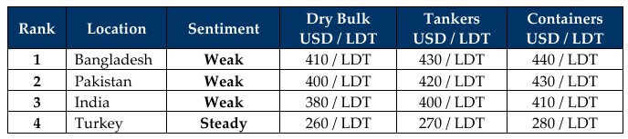

GMS Week 47 – FORUMS AND FRICTIONS!
in Weekly Demolition Reports 24/11/2025

This has been a disastrous week for nearly all the key indicators tracked in this newsletter, including the state of oil futures, freight rates, local steel plate prices, and disastrous currency devaluations (especially in India). To start, oil found itself slipping rather shockingly as it fell to USD 57.68/barrel – a total drop of over 6% in the last month and over 16% lower than the same time last year. As oil slipped, freight rates continued to climb throughout the week, recording a near 9% decline over the course of 30 days and over 48% as compared to November 2024.
At the same time, governments in the U.S. continue their sanctions and blacklist wave as EU members too are reportedly preparing the 20th batch of sanctions against Russia that could authorize member-state navies and coast guards to board shadow-fleet vessels suspected of carrying sanctioned cargoes. The proposal also considers granting third-country flag administrations permission to deregister such vessels and further tighten flag-state cooperation to curb evasive shipping activities. Moreover, the U.S. continues to tighten Iran’s economic activities and levy further sanctions that have now wrapped a reported 170 ships in the tangle of global blacklists.
All of this has trickled down to the ship-recycling industry, as not only is supply getting increasingly restricted (as evident from the quantum of the week’s deliveries at the various sub-continent waterfronts), but steel plate prices also fell in both Bangladesh and Pakistan, all while Bangladeshi and (especially) Indian currencies staged a late-Thanksgiving horror show this week. As the trading tables went comparatively quiet, much of the industry remained distracted as many gathered in Hong Kong for the annual Tradewinds Ship Recycling Forum. Among the many topics that were hot points of debate were future trends, supply, HKC developments, the dark-fleet problems plaguing the industry, and what possible solutions (if any) lie ahead. It is apparent that what happens with the dark/shadow fleet is of utmost importance given that over 900 vessels are now on the list with no viable exit or strategy for when they come of recyclable age.
Unlike forums of yesteryear, where plenty of trading and recycling deals were concluded on the conference floor, this year was far more muted in terms of deal flow, supply of vessels, and the dampened pricing and demand. The event was well attended by end users, cash buyers, insurers, and lawyers, all expecting (more like hoping, after the performance of the last few years) that vessels across the whole trading spectrum that are approaching 30 years of age and older should see a busy few years of activity in 2026.
Finally, there was some encouraging news with the first Pakistani ship-recycling yard set to receive HKC approval reportedly as early as next week, with another 2–3 set to follow in the next three months, while others are expected by the mid-way point of next year. Bangladesh also reported further yards being certified as the number gradually approaches 20. And Turkey? Your guess is as good as ours.
For Week 47 of 2025, GMS Market Rankings / vessel indications are as below:

📄 Download PDF: Ship-recycling-market-insight-Week-47-11-21-2025-Forums_and_Frictions.pdfSource: GMS,Inc. https://www.gmsinc.net/gms_new/index.php/web
 Translate
Translate